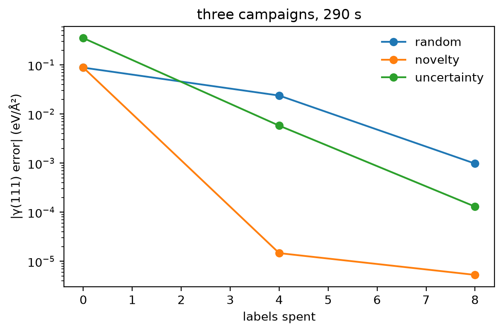

Tutorial 7: automating curation¶
Tutorial 6 found the missing surface data by hand. Here a loop finds it: run molecular dynamics with the current model, pick a few frames, label them, refit, and repeat. The question is how to pick. Three rules compete at the same label budget, and each is scored on one target: the Si(111) surface energy.
Goals
- Write two selection rules: random sampling, and descriptor novelty.
- Run the loop with each, and with ace-jax's own uncertainty, and compare the error of the target against the labels spent.
- Read where each rule spent its labels.
It builds on Tutorials 4 and 6 and is adapted from notebook E3 of the MLIP School 2026.
Run this notebook. Install uv. Then run this command:
uvx marimo edit --sandbox https://raw.githubusercontent.com/ACEsuit/ace-jax/main/docs/user/tutorials/notebooks/school_curation_si.py
The notebook opens in your browser. You do not need an account. You can also open the notebook in molab, the marimo hosted service. You must sign in to run it there.
This website shows a static copy of the notebook, run on a CPU when the site was built. Run time: approximately 5 minutes for the three campaigns.
import pathlib
import time
import jax
jax.config.update("jax_enable_x64", True) # fitting needs float64
import marimo as mo
import matplotlib.pyplot as plt
import numpy as np
from ace_jax.tutorials import campaign as C
from ace_jax.tutorials import curation as K
from ace_jax.tutorials import labels as L
from ace_jax.tutorials import structures as T
Step 1: the campaign¶
- Start: the bulk model of Tutorial 6 (ten strained and rattled cells), and a separate seed set of eight bulk cells that every refit starts from. The uncertainty rule needs an ARD fit (Step 2), so its start is the same data fitted with ARD, which predicts γ(111) differently: the three curves do not start at the same point.
- Pool: each round runs 60 steps of 400 K Langevin dynamics with the current model from three starting points, in this order: bulk, a (110) slab (a distractor: the target does not depend on it) and the target's (111) slab, keeping every fourth frame after the start (the starting structures are the test structures, so they are never candidates). Frames with two atoms closer than 1.7 Å are dropped.
- Selection: each round picks 4 frames, labels them, and refits the seed set plus everything picked so far. Two rounds: 8 labels.
- Score: the error of the model's γ(111) against the labeller's.
The MD pools of the run on this page, and the labels for all their frames, are included with the tutorial. Thus the loop uses these pools again and does not run MD again, because MD results are different on different machines. To run MD live, you need the labeller (exercise 3).
BASE = "https://raw.githubusercontent.com/ACEsuit/ace-jax/main/docs/user/tutorials/data/school/"
def shipped(rel):
_p = (mo.notebook_dir() / "../data/school" / rel) if mo.notebook_dir() else None
return _p if _p is not None and _p.exists() else BASE + rel
_caches = [L.LabelCache.from_file(shipped(f)) for f in ("e1/labels-mpa-0.xyz", "c/labels-mpa-0.xyz",
"e3/labels-mpa-0.xyz")]
class _Caches:
def get(self, atoms, model):
return next((h for c in _caches if (h := c.get(atoms, model)) is not None), None)
_cache = _Caches()
def label(xs):
return L.label(xs, model="mpa-0", cache=_cache)
from ace_jax.fit.xyz import read_extxyz
from ase import Atoms
shipped_pools = {}
for _f in read_extxyz(str(L.fetch(shipped("e3/pools.xyz")))):
_a = Atoms(numbers=_f.numbers, positions=_f.positions, cell=_f.cell, pbc=_f.pbc)
_a.info.update({k: _f.info[k] for k in ("config_type", "miller") if k in _f.info})
shipped_pools.setdefault(str(_f.info["driver"]), {}).setdefault(int(_f.info["round"]), []).append(_a)
work = pathlib.Path("ace_jax_tutorial_7")
work.mkdir(exist_ok=True)
Step 2: two selection rules¶
Each rule gets the pool's descriptors (one array per frame, a row per atom, in the reference basis of Tutorial 6), the training set's, the number of frames to pick, and a random generator, and returns the indices of its picks.
pick_random: anycountdistinct frames, uniformly at random.pick_novel: score each frame by its most unfamiliar atom, the largest over its atoms of the distance to the nearest training atom, and take thecounthighest scores.
def pick_random(pool_descriptors, training_descriptors, count, rng):
return [int(i) for i in rng.choice(len(pool_descriptors), size=count, replace=False)]
def pick_novel(pool_descriptors, training_descriptors, count, rng):
T = np.concatenate([np.asarray(r, float) for r in training_descriptors])
scores = [float(np.linalg.norm(np.asarray(r, float)[:, None, :] - T[None], axis=2).min(1).max())
for r in pool_descriptors]
return [int(i) for i in np.argsort(-np.asarray(scores), kind="stable")[:count]]
Checkpoint 1 passed: on a test pool, pick_random returns two distinct frames and pick_novel picks the frame farthest from every training atom first (frame 3, though frame 2 sits next to one lone outlier).
The third rule is ace-jax's own: fit with ARD (uq="ard", see the
ASE calculator how-to) and
pick the frames whose largest per-atom force uncertainty, forces_std,
is highest. It asks the model where it is unsure, rather than where the
data are thin.
def as_campaign_pick(rule):
"""Adapt a Step 2 rule to the loop: descriptors in the reference basis."""
_B = C.reference_basis()
def pick(pool, train, count, rng, model_file, posterior):
return rule(C.atom_descriptors(pool, _B), C.atom_descriptors(train, _B), count, rng)
return pick
rules = {"random": as_campaign_pick(pick_random), "novelty": as_campaign_pick(pick_novel),
"uncertainty": None} # None: the loop's ARD rule
_t = time.time()
runs = {d: K.run_campaign(d, label, work / d, pools=shipped_pools[d], pick=rules[d]) for d in rules}
campaign_seconds = time.time() - _t
_fig, _ax = plt.subplots(figsize=(6, 4))
for _d, _r in runs.items():
_h = _r["history"]
_ax.semilogy([x["labels"] for x in _h], [x["err"] for x in _h], "o-", label=_d)
_ax.set_xlabel("labels spent"); _ax.set_ylabel("|γ(111) error| (eV/Ų)"); _ax.legend(frameon=False)
_ax.set_title(f"three campaigns, {campaign_seconds:.0f} s")
_fig.tight_layout()
_fig

mo.md("| rule | start | after 4 labels | after 8 labels | frames picked |\n|---|---|---|---|---|\n"
+ "\n".join(f"| {d} | {r['history'][0]['err']:.2e} | {r['history'][1]['err']:.2e} | "
f"{r['history'][2]['err']:.2e} | {r['history'][1]['picks']}, {r['history'][2]['picks']} |"
for d, r in runs.items())
+ "\n\n|γ(111) error| in eV/Ų. Frames are numbered within each round's pool: 0-14 from the "
"bulk run, 15-29 from the (110) slab, 30-44 from the (111) slab (a live run may drop "
"unphysical frames and shift these).")
| rule | start | after 4 labels | after 8 labels | frames picked |
|---|---|---|---|---|
| random | 8.81e-02 | 2.38e-02 | 9.79e-04 | [29, 22, 8, 6], [19, 16, 44, 40] |
| novelty | 8.81e-02 | 1.47e-05 | 5.29e-06 | [30, 31, 32, 33], [16, 15, 18, 17] |
| uncertainty | 3.52e-01 | 5.80e-03 | 1.30e-04 | [15, 16, 17, 39], [42, 41, 43, 40] |
|γ(111) error| in eV/Ų. Frames are numbered within each round's pool: 0-14 from the bulk run, 15-29 from the (110) slab, 30-44 from the (111) slab (a live run may drop unphysical frames and shift these).
Checkpoint 2 passed: after 4 labels, novelty selection is 1620× closer to the target than random sampling.
Step 3: where did the labels go?¶
Each pool frame records the MD run it came from, so the picks say what each rule looked at.
- Random: round 1 picks 2 on the (110) slab, 2 on the bulk; round 2 2 on the (110) slab, 2 on the (111) slab.
- Novelty: round 1 picks 4 on the (111) slab; round 2 4 on the (110) slab.
- Uncertainty: round 1 picks 3 on the (110) slab, 1 on the (111) slab; round 2 4 on the (111) slab.
The target is the (111) slab; the (110) slab is a distractor. Random spreads its labels wherever the pool has frames. Novelty goes where atoms are farthest from the training set in descriptor space, and uncertainty where the model's forces are least certain. Neither knows what the labels are for: whether they land on the target is a property of this pool, not of the rule.
After 8 labels novelty is closest to the target here (random 9.8e-04, novelty 5.3e-06, uncertainty 1.3e-04 eV/Ų). Point the rule at what matters (for example, only MD from the target's own structures), or label more per round, and the differences close.
Reflection¶
Is "most novel" the same as "most useful"? When would novelty selection waste labels? Think before opening the answer.
A model answer
No. Novelty is distance from the data in descriptor space, which says nothing about whether a structure matters for the property you need. An unphysical frame from a badly behaved MD run, a high-energy collision or a configuration the simulation will never visit can be the most novel thing in the pool, and novelty selection will label it first. Descriptor distance is also only a proxy for what the model does not know; a committee or posterior uncertainty (the third rule here) measures that directly, but is just as blind to the target. A useful campaign aims the sampling at the simulations you will run, and filters the candidates (here, the 1.7 Å distance check) before any rule ranks them.
Exercises¶
- Distance to what?
pick_novelscores against the whole training set. Score against only the last eight training structures (the school's version): do the picks change? - Budget. Run one round of 8 picks instead of two of 4
(
K.run_campaign(..., rounds=1, per_round=8): it uses the included first-round pool, every frame of which is labelled). Is one large round better or worse than two small ones? - Live MD. With the labeller installed (
pip install mace-torch --extra-index-url https://download.pytorch.org/whl/cpu), droppools=fromrun_campaignto run the MD yourself, and try other seeds (seed=1,seed=2). Does the ranking of the rules hold? - Uncertainty-driven MD. The
ase_uhalpackage biases MD towards uncertain configurations (hyperactive learning), instead of filtering an ordinary MD run afterwards: see its documentation.
Summary¶
- A curation loop (MD, select, label, refit) automates the search of Tutorial 6.
- Selection rules spend the same budget very differently; measure them on the property you need.
- Novelty and uncertainty are blind to the target: aim the sampling.
Next: Tutorial 8 asks where the labels themselves come from.